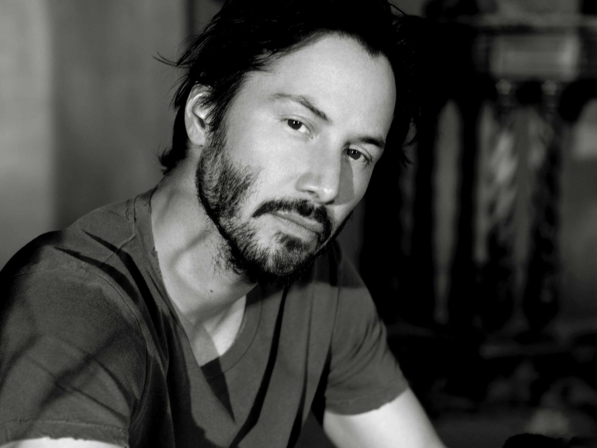

|  |
About Keanu ReevesKeanu Charles Reeves (d. 2 Eylül 1964, Lübnan), Kanadalı aktör, yapımcı, yönetmen ve müzisyen. Adının anlamı "Dağlardan esen rüzgâr"dır. Annesi ile babası Beyrut'ta bir gece kulübünde tanışmışlardır. Annesi İngiliz, babası Çin asıllı bir Hawaiilidir. Ancak kendisini Kanada'da büyüdüğü için Kanadalı saymaktadır. 3 ülkenin vatandaşlığına sahiptir. Ayrıca yapımcılığını CD Projekt Red'in üstlendiği Cyberpunk 2077 isimli oyunda Johnny Silverhand karakterini canlandırmıştır. Oyunculuk kariyerine ilk kez Kanada'da "Hanging In" isimli bir yapımla başladı. 1980'ler boyunca çeşitli reklamlarda (bir tanesi Coca-Cola için) rol aldı. İlk stüdyo filmi Kanada'da çektiği "Youngblood" oldu. Bu filmden sonra yeşil kart aldı ve Toronto'dan Los Angeles'a geçiş yaptı. Birkaç küçük rolden sonra River's Edge'de rol aldı ve bu filmin başarısından sonra Bill ve Ted'in Maceraları'nı çekti. Platoon filmi için teklif geldi ancak filmdeki şiddeti sevmediği için rolü reddetti.1990'ların başlarında hem yüksek bütçeli filmlerde hem de bağımsız ancak çok ses getiren filmlerde yer aldı. Bunlara örnekler; Point Break ve My Own Private Idaho'dur. 1993 yılında Reeves, Bram Stoker's Dracula'da yer aldı. Film büyük gişe başarısı elde etti ancak Reeves birçok olumsuz eleştiri aldı. Yönetmen Francis Ford Coppola Reeves'ten başka seçeneği olmadığını çünkü gençlerin ilgisini o sırada ancak onun çekebileceğini söylemiştir. 1994 yılında Speed filmini çekti. Film büyük bir reklam başarısıydı. Bu film sayesinde Keanu'nun izlenirliği arttı ve Johnny Mnemonic ve Chain Reaction gibi filmlerde rol almasını sağladı. Ancak iki film de gişede büyük hayal kırıklığı yarattı. Kariyerinde düşüş yaşayan Reeves'e Speed filminin devamında yer alması için 11 milyon dolar teklif edildi ancak o bu teklifi reddederek Al Pacino ve Charlize Theron ile Şeytanın Avukatı'nı çekmeyi tercih etti. 1999'da büyük hit olan The Matrix filminde başrol oynadı. Bu filmle tekrar büyük bir Hollywood yıldızı olduğunu ispatladı. The Matrix ile bu filmin devam filmleri arasında birkaç filmde daha yer aldı. Bu filmlerin hepsi de iyi gişe hasılatı yaparak Reeves'i tüm dünyanın dikkatine taşıdı. 31 Ocak 2005'te Reeves'e Hollywood Walk of Fame'de bir yıldız verildi. Reeves 2006 Oscar Ödül Töreni'ne Sandra Bullock ile katıldı. İkili 2006 yılında çektikleri The Lake House ile Speed filminden sonra bir kere daha bir araya geldi. Keanu Reeves'in de rol aldığı A Scanner Darkly de 2006 yılında gösterime girdi. |